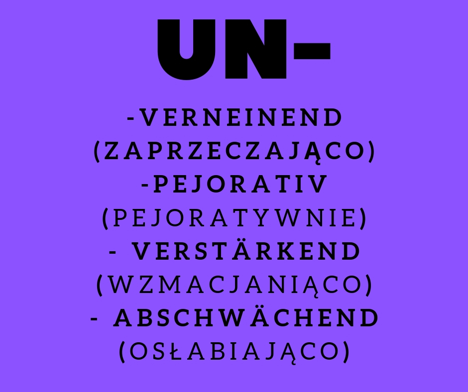

<?xml version="1.0" encoding="UTF-8"?><rss version="2.0"
	xmlns:content="http://purl.org/rss/1.0/modules/content/"
	xmlns:wfw="http://wellformedweb.org/CommentAPI/"
	xmlns:dc="http://purl.org/dc/elements/1.1/"
	xmlns:atom="http://www.w3.org/2005/Atom"
	xmlns:sy="http://purl.org/rss/1.0/modules/syndication/"
	xmlns:slash="http://purl.org/rss/1.0/modules/slash/"
	>

<channel>
	<title>Substantiv &#8211; Prosty &#8211; Niemiecki!</title>
	<atom:link href="../../../../category/gramatyka/substantiv/feed/index.html" rel="self" type="application/rss+xml" />
	<link>https://prosty-niemiecki.pl</link>
	<description>Anna Przyrowska: blog o autorskiej metodzie nauki języka niemieckiego</description>
	<lastBuildDate>Mon, 22 Apr 2019 07:37:30 +0000</lastBuildDate>
	<language>pl-PL</language>
	<sy:updatePeriod>
	hourly	</sy:updatePeriod>
	<sy:updateFrequency>
	1	</sy:updateFrequency>
	<generator>https://wordpress.org/?v=6.3.1</generator>

<image>
	<url>../../../../wp-content/uploads/2018/10/cropped-indeks-32x32.png</url>
	<title>Substantiv &#8211; Prosty &#8211; Niemiecki!</title>
	<link>https://prosty-niemiecki.pl</link>
	<width>32</width>
	<height>32</height>
</image> 
	<item>
		<title>Die Vorsilbe Un- (przedrostek Un-)</title>
		<link>../../../../gramatyka/substantiv/die-vorsilbe-un-przedrostek-un/</link>
					<comments>../../../../gramatyka/substantiv/die-vorsilbe-un-przedrostek-un/#respond</comments>
		
		<dc:creator><![CDATA[Anna Przyrowska]]></dc:creator>
		<pubDate>Sun, 21 Apr 2019 18:57:47 +0000</pubDate>
				<category><![CDATA[matura]]></category>
		<category><![CDATA[Substantiv]]></category>
		<category><![CDATA[abschwächend]]></category>
		<category><![CDATA[IB Abitur]]></category>
		<category><![CDATA[pejorativ]]></category>
		<category><![CDATA[przedrostek Un]]></category>
		<category><![CDATA[verneinend]]></category>
		<category><![CDATA[verstärkend]]></category>
		<category><![CDATA[Vorsilbe UN]]></category>
		<category><![CDATA[znaczenie przedrostka UN]]></category>
		<guid isPermaLink="false">../../../../?p=2165</guid>

					<description><![CDATA[Unwetter]]></description>
										<content:encoded><![CDATA[
<p>Jak przedrostek <strong>Un-</strong> (die Vorsilbe<strong> Un-</strong>) wpływa na znaczenie wyrazu?</p>


<p>W poprzednim <a rel="noreferrer noopener" aria-label="wpisie (opens in a new tab)" href="../../../../matura/zaprzeczenia-jak-je-rozpoznac/" target="_blank">wpisie</a> zajęłam się prezentacją wyrazów/zwrotów wyrażających w  jakiś sposób ukryte zaprzeczenie, odrzucenie czy negację. Przedrostek <strong>Un-</strong> używany jest  powszechnie  przede wszystkim  jako wyrażający zaprzeczenie (<strong>verneinende</strong> Bedeutung).  Mniej znany jest jego aspekt negatywnego zabarwienia znaczenia rzeczowników  (<strong>pejorative</strong> Bedeutung)  Czy powyższe dwa znaczenia przedrosteka <strong>Un-</strong> wyczerpują nasze rozumienie rzeczowników w języku niemieckim? Otóż przedrostek <strong>Un-</strong> ma jeszcze dwa inne &#8211; o wiele mniej znane znaczenia &#8211; <strong>verstärkende</strong> Bedeutung (wzmacianjące) oraz<strong> abschwächende</strong> Bedeutung (osłabiające). Przybliżę ten aspekt  na poniżej podanych przykładach:</p>


<h4 class="wp-block-heading" style="text-align:center">verneinend</h4>


<p style="background-color:#aeedcd" class="has-background">die <strong>Unmöglichkeit </strong>(niemożliwość),  der <strong>Unsinn</strong> (bezsens), die <strong>Untätigkeit </strong>(bezczynność), die <strong>Ungunst </strong>(niełaska/nieprzychylność), die <strong>Unannehmlichkeiten</strong> (nieprzyjemności), die<strong> Unsterblichkeit</strong> (nieśmiertelność), die <strong>Unabhängigkeit</strong> (niezależność), die <strong>Untiefe</strong> (bród, mielizna)  ( Ale tłumaczony  RÓWNIEŻ jako otchłań) &#8211; patrz verstärkend. Oraz wiele innych rzeczowników.  </p>


<h4 class="wp-block-heading" style="text-align:center">pejorativ</h4>


<p style="background-color:#aeedcd" class="has-background">die<strong> Unart </strong>(przywara), der <strong>Unfall </strong>(wypadek), der <strong>Unfug </strong>(bzdury), das <strong>Ungeziefer</strong> (robactwo), das<strong> Unkraut </strong>(chwast), der <strong>Unmensch </strong>(okrutnik), das <strong>Untier</strong> (potwór), die <strong>Untat</strong> (niecny, niegodziwy czyn, zbrodnia), das <strong>Unwesen</strong> (nieład, nieporządek), der <strong>Ungeist</strong> (zaślepienie), das <strong>Ungestüm</strong> (porywczość), <strong>Unbilden Pl </strong>(dokuczliwe skutki), das <strong>Unding</strong> (niedorzeczność), der <strong>Unstern</strong> (unter einem Unstern stehen) pod nieszczęśliwą gwiazdą, die <strong>Unmäßigkeit</strong> (nieumiarkowanie), die <strong>Unwägbarkeit</strong> (nieprzewidywalne zdarzenia), die <strong>Unzucht </strong>(kein Pl) (nierząd), der <strong>Unwille(n)</strong> (gniew/oburzenie), die<strong> Unverschämtheit </strong>(bezczelność), das <strong>Unvermögen</strong> (niemoc, bezsilność), die <strong>Untugend </strong>(wada, nałóg), </p>


<h4 class="wp-block-heading" style="text-align:center"><strong>verstärkend</strong></h4>


<p style="background-color:#aeedcd" class="has-background">die <strong>Unkosten</strong> &#8211; Pl (wydatki, koszta), die <strong>Unmenge</strong> (mnóstwo), die <strong>Unsumme</strong> (bajońska suma), die <strong>Unzahl von </strong>[D] &#8211; niezliczona ilość czegoś, die <strong>Untiefe </strong>(otchłań) &#8211; patrz również verneinend, das <strong>Unmaß </strong>(bezmiar), die <strong>Unmasse </strong>(eine Unmasse Leute/Bücher) wielu ludzi/wiele książek</p>


<h4 class="wp-block-heading" style="text-align:center"><strong>abschwächend</strong></h4>


<p style="background-color:#aeedcd" class="has-background">die <strong>Unklugheit</strong> (nieroztropność), <strong>zur Unzeit</strong> (nie w porę), das <strong>Unbehagen </strong>(nieprzyjemne uczucie, dyskomfort), das <strong>Unwetter </strong>(bardzo zła pogoda), die <strong>Unrast</strong> (kein Pl)  (niepokój), die <strong>Ungemach</strong>  (nieprzyjemność, przykrość), die <strong>Unschuld</strong> (naiwność, niewinność), </p>


<p></p>


<p>Pierwsza kategoria (verneinend) ułatwia zrozumienie rzeczowników poprzez ich zaprzeczenie. To nie ulega wątpliwości. Druga kategoria (pejorativ) ma jednoznacznie negatywny wydźwięk. Zapamiętać  warto więc zarówno drugi, jak i trzeci aspekt znaczenia tego przedrostka , a mianowiecie pejoratywny (pejorativ)  jak i wzmacniający (verstärkend). Ostatnie znaczenie (abschwächend) nie powinno sprawiać trudności</p>


<p>Przeczytaj również <a rel="noreferrer noopener" aria-label="ten (opens in a new tab)" href="../../../../gramatyka/schon-erst-adverbien-juz-dopiero/" target="_blank">ten</a> wpis.</p>


<figure class="wp-block-image"><figcaption>prosty-niemiecki.pl</figcaption></figure>


<div class="fb-like" data-share="true" data-width="450" data-show-faces="true">&nbsp;</div>


<p><br></p>
]]></content:encoded>
					
					<wfw:commentRss>../../../../gramatyka/substantiv/die-vorsilbe-un-przedrostek-un/feed/</wfw:commentRss>
			<slash:comments>0</slash:comments>
		
		
			</item>
		<item>
		<title>Neutrum &#8211; rodzaj nijaki rzeczowników</title>
		<link>../../../../gramatyka/neutrum-rodzaj-nijaki-rzeczownikow/</link>
					<comments>../../../../gramatyka/neutrum-rodzaj-nijaki-rzeczownikow/#respond</comments>
		
		<dc:creator><![CDATA[Anna Przyrowska]]></dc:creator>
		<pubDate>Sat, 13 Oct 2018 19:28:58 +0000</pubDate>
				<category><![CDATA[gramatyka]]></category>
		<category><![CDATA[Substantiv]]></category>
		<category><![CDATA[Genus]]></category>
		<category><![CDATA[Neutrum]]></category>
		<category><![CDATA[rodzaj nijaki]]></category>
		<category><![CDATA[rzeczownik]]></category>
		<guid isPermaLink="false">../../../../?p=1688</guid>

					<description><![CDATA[Regeln für das Genus Rodzaj nijaki to trzeci z możliwych rodzajów. O rodzaju męskim pisałam tu,  a rzeczowniki rodzaju żeńskiego przedstawiłam]]></description>
										<content:encoded><![CDATA[
<p style="text-align:center"><em>Regeln für das Genus</em></p>


<p><strong>Rodzaj nijaki</strong> to trzeci z możliwych rodzajów. O rodzaju męskim pisałam <a href="../../../../gramatyka/maskulin-rodzaj-meski/">tu,</a>  a rzeczowniki rodzaju żeńskiego przedstawiłam <a href="../../../../gramatyka/rodzaj-zenski/">tu.</a></p>


<p style="font-size:22px" class="has-vivid-cyan-blue-color"><strong>Bezeichnungen für Wortarten sind oft neutral</strong></p>


<p>Określenia części mowy i zdania są często rodzaju nijakiego, a przykłady przytoczyłam poniżej, są to:</p>


<p class="has-background has-regular-font-size has-very-light-gray-background-color">das Adjektiv, Adverb, Pronomen, Verb, Substantiv <strong>aber</strong>: <strong>der Artikel, die Präposition</strong></p>


<p style="font-size:23px" class="has-vivid-cyan-blue-color"><strong>Bezeichnungen für physikalische und theoretische Einheiten sind oft neutral</strong></p>


<p>Określenia na jednostki fizyczne i teoretyczne są często rodzaju nijakiego, co można prześledzić na przykładach:</p>


<p class="has-background has-very-light-gray-background-color">das Gramm, Kilo, Ohm, Pfund, Volt, Watt, <strong>aber</strong>: <strong>die Tonne, der Zentner, der/das Liter, der/das Meter</strong></p>


<p style="font-size:23px" class="has-vivid-cyan-blue-color"><strong>Bezeichnungen für chemische Elemente und Metalle sind meist neutral</strong></p>


<p>Określenia chemicznych pierwiastków, oraz  metali należą najczęściej do rodzaju nijakiego, co widać:<br/></p>


<p class="has-background has-very-dark-gray-color has-very-light-gray-background-color">das Salz, Zink, Eisen, Gold, Kupfer, Jod, Silber, Blei, <strong>aber: der Stahl, die Bronze, der Sauerstoff</strong></p>


<p style="font-size:23px" class="has-vivid-cyan-blue-color"><strong>Bezeichnungen für Sprachen</strong></p>


<p class="has-very-dark-gray-color">Języki są rodzaju nijakiego (das Deutsche/Polnische/Russische), co łatwo zapamiętać ucząc się następującego zwrotu:</p>


<p class="has-background has-very-light-gray-background-color">Ich übersetze aus dem Deutschen ins Polnische/Englische/Russische</p>


<p style="font-size:23px" class="has-vivid-cyan-blue-color"><strong>Substantive auf &#8211;<em> tum</em> sind meist neutral</strong></p>


<p>Rzeczowniki kończące się na <strong>-tum </strong>są najczęściej neutralne. A więc:</p>


<p class="has-background has-very-light-gray-background-color">das Altertum, Fürstentum, <strong>aber</strong> <strong>der Reichtum, der Irrtum</strong></p>


<p style="font-size:23px" class="has-vivid-cyan-blue-color"><strong>Substntivierte Infinitive (bilden keinen Plural)</strong></p>


<p>Rzeczowniki powstałe od czasowników (nie tworzą liczby mnogiej) są proste do utworzenia i zapamiętania: <br/></p>


<p class="has-background has-very-light-gray-background-color">das Essen, Vertrauen, Schreiben, Bedauern, Benehmen, Verhalten<br/></p>


<p style="font-size:23px" class="has-vivid-cyan-blue-color"><strong>Bezeichnungen für Kinder und junge Tiere</strong></p>


<p>Określenia dzieci i młode zwierzęta &#8211; das Lamm, Schaf, Kind, Baby usw.</p>


<p style="font-size:23px" class="has-vivid-cyan-blue-color"><strong>Wörter auf<em>  -chen</em> und <em>-lein</em></strong></p>


<p>Zdrobnienia &#8211; słowa kończące się na <strong>-chen</strong> i <strong>-lein. </strong></p>


<p class="has-background has-very-light-gray-background-color">das Mädchen,  Gretchen, Fräulein, Schätzchen</p>


<p style="font-size:23px" class="has-vivid-cyan-blue-color"><strong>Kollektiva </strong> <br/></p>


<p class="has-background has-very-light-gray-background-color">das Besteck, Obst, Gedeck, Gemüse, <br/></p>


<p style="font-size:23px" class="has-vivid-cyan-blue-color"><strong>Fremdwörter auf <em>-(m)ent </em>und<em> -um</em></strong></p>


<p>Słowa obcego pochodzenia kończące się na &#8211;<strong>(m)ent</strong> albo<strong> -um. </strong>Oto przykłady<br/></p>


<p class="has-background has-very-light-gray-background-color">das Dokument, Sortiment, Studium, <strong>aber der/das Moment, der</strong> <strong>Konsument</strong></p>


<p style="font-size:23px" class="has-vivid-cyan-blue-color"><strong>Substantive auf <em>-nis </em>sind oft neutral, einige sind feminin</strong><br/></p>


<p>Rzeczowniki kończące się na -nis są często rodzaju nijakiego, niektóre są jednak rodzaju żeńskiego (patrz <a href="../../../../gramatyka/rodzaj-zenski/">tu</a>)</p>


<p class="has-background has-very-light-gray-background-color">das Geheimnis, Zeugnis, Verzeichnis, Ergebnis, Ereignis, Erlebnis, <strong>aber die Wildnis, Erkenntnis, Erlaubnis, Finsternis, Kenntnis</strong></p>


<p style="font-size:23px" class="has-vivid-cyan-blue-color">Endungen <em><strong>-al, -ar, -at, -ent, -ett, -il, -iv, -nis</strong></em></p>


<p><strong></strong></p>


<p class="has-background has-very-light-gray-background-color">das Lineal, Exemplar, Fabrikat, Dokument, Skelett, Ventil, Motiv, Zeugnis<br/></p>


<p>Końcówka <strong>-ar</strong> może świadczyć o rodzaju nijakim, ale uwaga na wyjątki </p>


<p class="has-background has-very-light-gray-background-color">der Basar, Bibliothekar, Kommentar, Kommissar, Notar</p>


<p style="font-size:23px" class="has-vivid-cyan-blue-color"><strong>Ländernamen ohne Artikel</strong></p>


<p>Nazwa krajów używana bez rodzajnika jest rodzaju nijakiego. Istnieją kraje posiadające rodzajnik der/die Sing/Pl.  Skróconą listę tych państw znajdziesz <a href="https://learngerman.dw.com/de/l%C3%A4ndernamen-mit-artikel/l-40553255/gr-40555477">tu.</a><br/></p>


<div>Przeczytaj<a href="../../../../gramatyka/wohin-wo-woher/"> również</a></div>
<div class="fb-like" data-share="true" data-width="450" data-show-faces="true"> </div>


<p></p>
]]></content:encoded>
					
					<wfw:commentRss>../../../../gramatyka/neutrum-rodzaj-nijaki-rzeczownikow/feed/</wfw:commentRss>
			<slash:comments>0</slash:comments>
		
		
			</item>
		<item>
		<title>Maskulin &#8211; rodzaj męski</title>
		<link>../../../../gramatyka/maskulin-rodzaj-meski/</link>
					<comments>../../../../gramatyka/maskulin-rodzaj-meski/#respond</comments>
		
		<dc:creator><![CDATA[Anna Przyrowska]]></dc:creator>
		<pubDate>Wed, 10 Oct 2018 17:41:34 +0000</pubDate>
				<category><![CDATA[gramatyka]]></category>
		<category><![CDATA[Substantiv]]></category>
		<category><![CDATA[regeln]]></category>
		<category><![CDATA[rodzaj męski]]></category>
		<category><![CDATA[zasady]]></category>
		<guid isPermaLink="false">../../../../?p=1671</guid>

					<description><![CDATA[Regeln für das Genus. Rodzaj męski rzeczowników We wpisie o rzeczownikach rodzaju żeńskiego zajęłam się typowymi dla tego rodzaju końcówkami oraz]]></description>
										<content:encoded><![CDATA[
<p style="text-align:center" class="has-regular-font-size"><em>Regeln für das Genus. </em><br/></p>


<h2 class="wp-block-heading"><strong>Rodzaj męski rzeczowników</strong></h2>


<p class="has-drop-cap">We <a href="../../../../gramatyka/rodzaj-zenski/" target="_blank" rel="noopener">wpisie</a> o rzeczownikach rodzaju żeńskiego zajęłam się typowymi dla tego rodzaju końcówkami oraz sposobami tworzenia liczby mnogiej w przypadku tych końcówek.  Przyszedł czas na zaprezentowanie rodzaju męskiego. Tym razem nie będzie mowa o typowych końcówkach. Jest ich niewiele. Wymieniać będę raczej grupy rzeczowników, gdyż ułatwia to zapamiętanie i zgrupowanie rzeczowników o tym samym rodzaju. <br/></p>


<h3 class="wp-block-heading"><strong>Monatsnamen, Wochentage, Jahres- und Tageszeiten, Himmelsrichtungen und viele Naturereignisse sind meist maskulin </strong></h3>


<p>Nazwy miesięcy, dni tygodnia, pory roku i dnia, kierunki świata oraz wiele zjawisk przyrody posiadają w języku niemiecki rodzaj męski. Przytoczę tylko parę przykładów, gdyż są to wyrazy ogólnie znane &#8211; choćby z powitań <br/></p>


<p class="has-background has-very-light-gray-background-color">der Januar, Herbst, Norden,  Morgen,  Wind, Nebel, Tag, Blitz usw.</p>


<h4 class="wp-block-heading">Uwaga na wyjątki!<br/></h4>


<p class="has-background has-regular-font-size has-vivid-red-color has-very-light-gray-background-color"><strong>die Nacht, die Woche,</strong></p>


<p class="has-background has-vivid-red-color has-very-light-gray-background-color"><strong> das Jahr, das Wochenende</strong></p>


<p>W tym miejscu polecam <a href="../../../../gramatyka/mein-geburtsdatum-jak-data-urodzin-pomaga-w-nauce-gramatyki/" target="_blank">wpis</a> o dacie urodzin, gdzie przedstawiłam jak praktycznie  można zapamiętać rodzaj wymienionych wyżej rzeczowników. </p>


<h3 class="wp-block-heading"><strong>Bezeichnungen für Mineralien und Gesteine (im weiten Sinn) sind meistens maskulin</strong><strong></strong></h3>


<p class="has-regular-font-size">Nazwy minerałów i kamieni/skał są najczęściej rodzaju męskiego. Oto przykłady:</p>


<p class="has-background has-regular-font-size has-very-light-gray-background-color">der Diamant, Stein, Sand, Rubin, Staub, Schlamm, Kalk usw.</p>


<h3 class="wp-block-heading"><strong>Bezeichnungen für Menschen, Berufe und soziale Ränge (ohne Bezug auf das natürliche Geschlecht)</strong></h3>


<p class="has-regular-font-size">Rodzaju męskiego są rzeczowniki określające ludzi, zawody i status społeczny (bez odwoływania się do płci). Parę przykładów:</p>


<p class="has-background has-very-light-gray-background-color">der Arzt, Chef, Lord, Held, Koch uws.</p>


<p><strong>Substantive auf -ist, -tor, -nom, -ant, -loge, -and, -ent und -ismus </strong></p>


<p>Wyżej wymienione końcówki są typowe dla rodzaju męskiego. Oto przykłady:</p>


<p class="has-background has-very-light-gray-background-color">der Journalist, Doktor, Astronom, Laborant, Geologe, Doktorant, Student, Subjektivismus usw.<br/></p>


<h3 class="wp-block-heading" id="mce_43"><em>Verbsubstantivierungen ohne Endung sind meist maskulinum</em></h3>


<p>Rzeczownki odczasownikowe występujące bez końcówek są najczęściej rodzaju męskiego. Oto parę przykładów:</p>


<p class="has-background has-very-light-gray-background-color">der Anfang (anfangen), Anruf (anrufen), Bruch (brechen), Gang (gehen), Sprung (springen), Besuch (besuchen), Dank (danken), Griff (greifen), Verlust (verlieren), Zug (ziehen), Fall (fallen), Empfang (empfangen), Hinweis (hinweisen), Schnitt (schneiden) usw.</p>


<p>Istnieją oczywiście wyjątki, spełniają wyżej opisaną zasadę, ale są rodzaju żeńskiego lub nijakiego:</p>


<p class="has-background has-vivid-red-color has-very-light-gray-background-color"><strong>die Antwort, Abwehr,  Umkehr, Trauer</strong></p>


<p class="has-background has-vivid-red-color has-very-light-gray-background-color"><strong>das Verbot, Angebot, Lob</strong></p>


<p>Życzę łatwego przyswojenia tych reguł. <br/></p>


<p><strong></strong></p>


<div></div>
<div class="fb-like" data-share="true" data-width="450" data-show-faces="true"></div>]]></content:encoded>
					
					<wfw:commentRss>../../../../gramatyka/maskulin-rodzaj-meski/feed/</wfw:commentRss>
			<slash:comments>0</slash:comments>
		
		
			</item>
		<item>
		<title>Femininum &#8211; rodzaj żeński</title>
		<link>../../../../gramatyka/rodzaj-zenski/</link>
					<comments>../../../../gramatyka/rodzaj-zenski/#respond</comments>
		
		<dc:creator><![CDATA[Anna Przyrowska]]></dc:creator>
		<pubDate>Wed, 03 Oct 2018 20:23:05 +0000</pubDate>
				<category><![CDATA[gramatyka]]></category>
		<category><![CDATA[Substantiv]]></category>
		<category><![CDATA[feminin]]></category>
		<category><![CDATA[Femininum]]></category>
		<category><![CDATA[końcowki rodzaju żeńskiego]]></category>
		<category><![CDATA[rodzaj żeński]]></category>
		<guid isPermaLink="false">../../../../?p=1528</guid>

					<description><![CDATA[Rodzaj żeński rzeczowników W tym wpisie zaprezentuję koncówki rzeczowników typowych dla rodzaju żeńskiego.&#160; Warto zapamiętać nawet niektóre z nich. Daje]]></description>
										<content:encoded><![CDATA[<div class="dt-inner">
<h2 class="source" style="text-align: center;"><strong class="headword">Rodzaj żeński rzeczowników</strong></h2>
<p class="source">W tym wpisie zaprezentuję koncówki rzeczowników typowych dla rodzaju żeńskiego.&nbsp; Warto zapamiętać nawet niektóre z nich. Daje to pewność określenia rodzaju bez specjalnego wysiłku i często pozwoli uniknąć zapamiętywania rzeczowników z rodzajnikami.</p>
</div>
<h2 style="text-align: center;"><em>Substantive mit einer der folgenden Endungen sind feminin</em></h2>
<p>Rzeczowniki o następujących końcówkach są zawsze rodzaju żeńskiego.</p>
<ul>
<li>&#8211;<strong>ung</strong> (Bedeutung)</li>
<li>&#8211;<strong>heit</strong> (Faulheit)</li>
<li><strong>-keit</strong> (Möglichkeit)</li>
<li><strong>-schaft</strong> (Bruderschaft)</li>
<li>&#8211;<strong>in</strong> (zawody rodzaju żeńskiego Lehrerin)</li>
<li>&#8211;<strong>ade</strong> (Fassade)</li>
<li><strong>-age</strong> (Garage)</li>
<li><strong>-enz</strong> (Existenz, Eminenz)</li>
<li><strong>-ette</strong> (Tablette)</li>
<li><strong>-ik</strong> (Ethik)</li>
<li><strong>-ur</strong> (Kultur) aber <span style="color: #ff0000;">das Abitur</span></li>
<li><strong>-anz</strong> (Toleranz)</li>
<li><strong>-ie</strong> (Kopie) aber&nbsp; <span style="color: #ff0000;">das Genie</span></li>
<li><strong>-sis</strong> (Ka̱tharsis)</li>
<li><strong>-isse</strong> (Kulisse)</li>
<li><strong>-üre</strong> (Lektüre)</li>
<li><strong>-tät</strong> (Qualität)</li>
<li>&#8211;<strong>ive</strong> (Alternative)</li>
<li><strong>-ine</strong> (Kabine)</li>
<li><strong>-tion</strong> (Nation)</li>
<li><strong>-nion</strong> (Union)</li>
<li><strong>-ion</strong> (Kommission)</li>
<li><strong>-ei</strong> (Partei, Kondiitorei)</li>
</ul>
<p>Liczba mnoga jest łatwa do utworzenia &#8211;&nbsp; przez dodanie końcowki <strong>-n</strong> (po -e), albo<strong> -en.</strong></p>
<h2 style="text-align: center;"><em>Länder- und Landschaftsnamen auf -ei, -ie, -e und -a sind feminin</em></h2>
<p>Nazwa krajów i krain geograficznych kończących się na -ei, -ie, -e oraz -a jest zawsze rodzaju żeńskiego. Oto parę przykładów:</p>
<ul>
<li>
<blockquote><p>Türkei</p></blockquote>
</li>
<li>
<blockquote><p>Mongolei</p></blockquote>
</li>
<li>
<blockquote><p>Normandie</p></blockquote>
</li>
<li>
<blockquote><p>Provence</p></blockquote>
</li>
<li>
<blockquote><p>Riviera</p></blockquote>
<h2 style="text-align: center;"><em>Versubstantivierungen auf -t sind meist feminin</em></h2>
<p>Rzeczowniki powstałe od czasowników i kończące się na -t są <strong>najczęściej </strong>rodzaju żeńskiego. Warto zapamiętać niektóre z nich:</li>
<li>
<blockquote><p>Ankunft (ankommen) &#8211; przyjazd</p></blockquote>
</li>
<li>
<blockquote><p>Fahrt (fahren) &#8211; jazda</p></blockquote>
</li>
<li>
<blockquote><p>Flucht (fliehen) &#8211; ucieczka</p></blockquote>
</li>
<li>
<blockquote><p>Geburt (gebären) &#8211; poród</p></blockquote>
</li>
<li>
<blockquote><p>Naht (nähen) &#8211; szew</p></blockquote>
</li>
<li>
<blockquote><p>Pflicht (pflegen) &#8211; obowiązek</p></blockquote>
</li>
<li>
<blockquote><p>Schlacht (schlagen) &#8211; bitwa</p></blockquote>
</li>
<li>
<blockquote><p>Schrift (schreiben) &#8211; pismo</p></blockquote>
</li>
<li>
<blockquote><p>Sicht (sehen) &#8211; widok, widoczność</p></blockquote>
</li>
<li>
<blockquote><p>Tat (tun) &#8211; czyn</p></blockquote>
</li>
<li>
<blockquote><p>Zucht (züchten) &#8211; hodowla</p></blockquote>
</li>
</ul>
<h2 style="text-align: center;"><em>Substantive auf -nis sind oft neutral<span style="color: #3366ff;"><span style="color: #000000;">,</span> einige</span> sind feminin</em></h2>
<p>Rzeczowniki kończące się na -nis są często rodzaju męskiego<span style="color: #3366ff;">, <strong>niektóre</strong></span> są jednak rodzaju żeńskiego. Oto one:</p>
<ul>
<li>
<blockquote><p>Erkenntnis (poznanie, przeświadczenie)</p></blockquote>
</li>
<li>
<blockquote><p>Erlaubnis (pozwolenie, przyzwolenie)</p></blockquote>
</li>
<li>
<blockquote><p>Finsternis (ciemność, mrok, zaćmienie)</p></blockquote>
</li>
<li>
<blockquote><p>Kenntnis (wiedza, znajomość rzeczy, wiadomość)</p></blockquote>
</li>
<li>
<blockquote><p>Wildnis (puszcza, dzika okolica)</p></blockquote>
<p>Pragnę podkreślić, że te końcówki nie wyczerpują listy rzeczowników rodzaju żeńskiego. Niestety! Oznacza to, że należy zapamiętać wiele innych rzeczowników z ich rodzajnikami. Z mojego doświadczenia wynika, że końcówka <strong>-e</strong> wskazuje z dużym prawdopodobieństwem na rodzaj żeński! Pod warunkiem, że nie jest to końcówka rodzaju męskiego&nbsp;<strong> -oge </strong>( np. der Psychologe)!</p>
<p>[kkstarratings]</li>
</ul>
<p>Przeczytaj <a href="../../../../gramatyka/nominativ/" target="_blank" rel="noopener">również</a></p>
<div></div>
<div class="fb-like" data-share="true" data-width="450" data-show-faces="true"></div>
]]></content:encoded>
					
					<wfw:commentRss>../../../../gramatyka/rodzaj-zenski/feed/</wfw:commentRss>
			<slash:comments>0</slash:comments>
		
		
			</item>
	</channel>
</rss>
